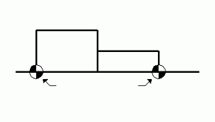
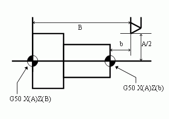
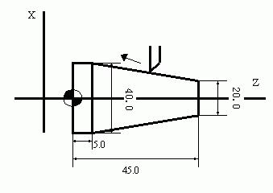

在程序开发开始之前必须决定坐标系和程序的原点。
通常把程序原点确定为便于程序开发和加工的点。

在多数情况下，把 Z 轴与 X 轴的交点设置为程序原点

坐标原点
1. 机床坐标系统
这个坐标系统用一个固定的机床的点作为其原点。在执行返回原点操作时，机床移动到此机床原点。
2. 绝对坐标系统
用户能够可建立此坐标系统。它的原点可以设置在任意位置，而它的原点以机床坐标值显示。
3. 相对坐标系统
这个坐标系统把当前的机床位置当作原点，在此需要以相对值指定机床位置时使用。
4. 剩余移动距离
此功能不属于坐标系。它仅仅显示移动命令发出后目的位置与当前机床位置之间的距离。仅当各个轴的剩余距离都为 零 时，这个移动命令才完成。

设置坐标系
开发程序首先要决定坐标系。程序原点与刀具起点之间的关系构成坐标系；这个关系应当随着程序的执行输入给 NC 机床，这个过程能够用
G50 命令来实现。
在切削进程开始时，刀具应当在指定的位置；
由于上面所述设置原点的过程已经完成，工件坐标系和刀具起始位置就定了；刀具更换也在这个被叫为起点的位置操作。

绝对/增量 坐标系编程
NC 车床有两个控制轴；对这种 2 轴系统有两种编程方法：绝对坐标命令方法和增量坐标命令方法。此外，这些方法能够被结合在一个指令里。对于X 轴和 Z 轴寻址所要求的增量指令是 U 和 W。

① 绝对坐标程序---X40.Z5.;
② 增量坐标程序---U20.W-40.;
③ 混合坐标程序---X40.W-40.;